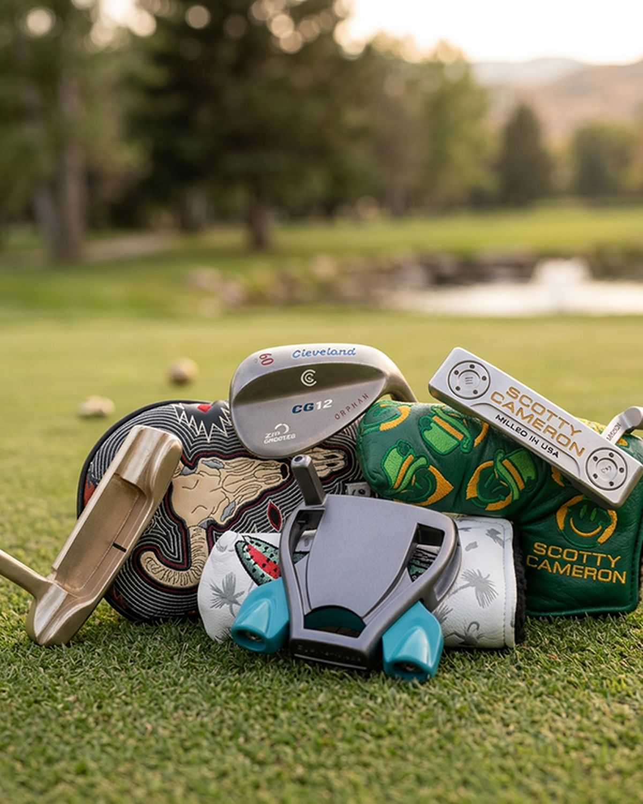
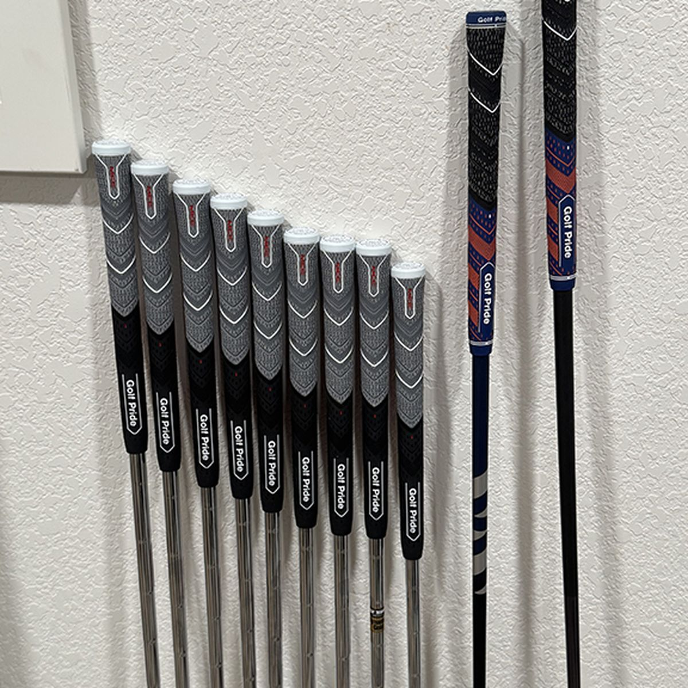
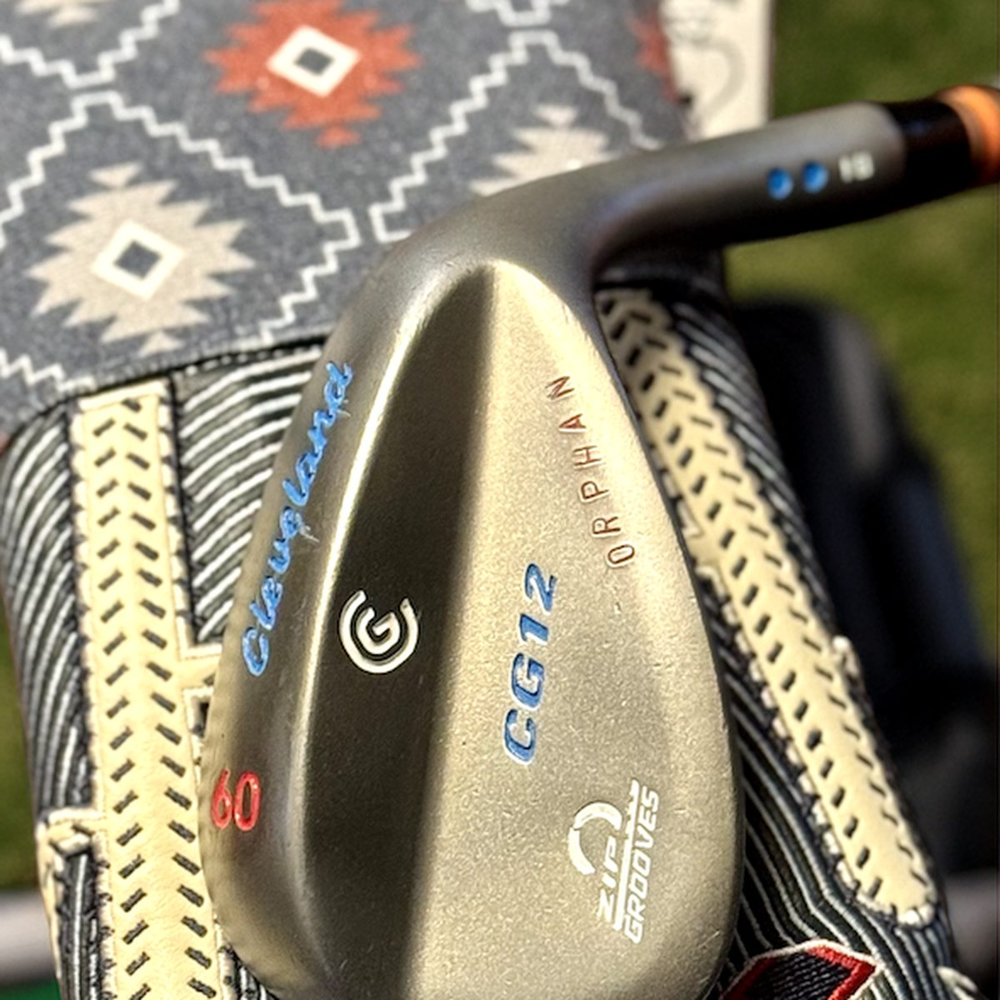
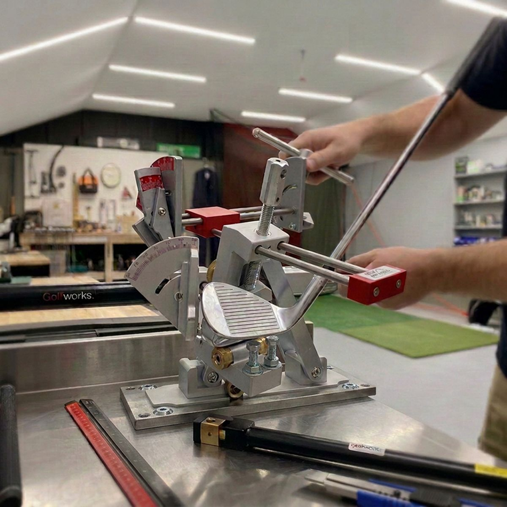
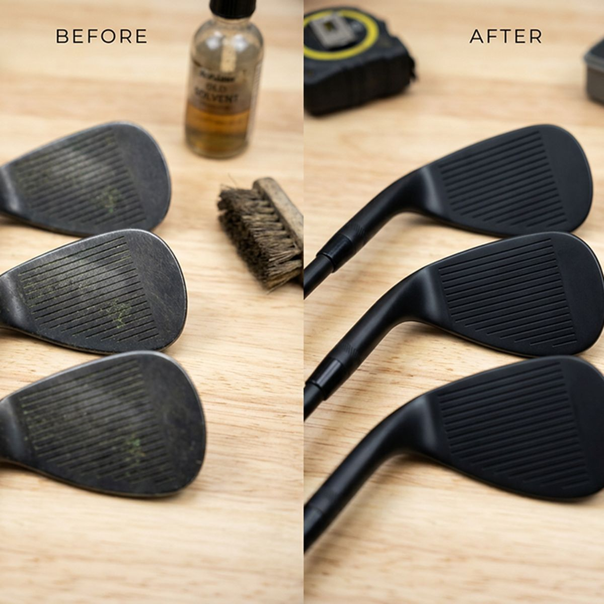

Services
Golf club repair
in Denver.
Four services, one bench. Everything measured, everything quoted before we start.

- LocationDenver metro
- Hours8:00am – 5:00pm
- TurnaroundMost work in days
- Service areaDenver & Front Range
01 — Most requested
Reshafting &
regripping.
Your grips and shafts are the engine of the club. If the driver feels weak, the irons feel dead, or the putter grip is slicker than a wet green, it's time for an upgrade.
- Reshafting. Premium steel or graphite installed to suit your feel and swing speed.
- Frequency matching. No guessing — your shafts perform consistently across the set.
- Regripping. Everything from tour-level tacky to oversized. Bring your own or we'll order.
- Labor $5–$20 per club. Grips $6–$15, shafts $20–$60. Full-set regrip lands around $110–$250.


02 — Full build
Custom
clubmaking.
We build completely custom clubs tailored to your swing, feel and style. From drivers to wedges, every club is hand-assembled with tour-level precision and premium materials.
- Shaft selection. The right flex, weight and profile for how you actually swing.
- Clubhead sourcing. Forgiveness, workability, or something wild — we'll find it.
- Swing weighting & MOI matching. Consistent feel from top to bottom of the bag.
- Ferrules, paint fill & stamping. Make them unmistakably yours.
03 — Quick win
Loft & lie
adjustments.
Your irons and wedges might not be lofted and lie'd correctly, which means your ball flight is wrong before you even swing. We'll get them dialed in.
- Loft adjustments. Fix your gapping so you're not stuck between clubs.
- Lie adjustments. Stop fighting hooks and slices caused by an improper setup.
- Bending for feel. Want a softer forged club? We can bend it to improve responsiveness.
- $5–$12 per club, all in. Measured before and after, every time.
Denver note: thin air carries the ball further than sea-level yardage charts suggest, which quietly compresses the gaps between your clubs. Getting lofts checked matters more here than almost anywhere else.


04 — Bring it back
Repairs &
restorations.
Dented wedge? Cracked ferrules? A vintage putter that deserves better? We love keeping classic clubs in the game.
- Putter refinishing. Deep clean, re-milling, custom stamping — from $85.
- Wedge restoration. Re-groove, re-finish and customize your scoring tools.
- Clubhead repairs. Epoxy work, sole grind adjustments, and making them look right again.
- Vintage welcome. Old blades, persimmon woods, a putter handed down — bring it in.
Straight answers
What it costs.
Labor rates up front. Parts are your choice and priced separately, so you always know what you're paying for.
A full-set regrip runs roughly $110–$250 all in, depending on the grips you pick. Send photos of your clubs and we'll give you a firm number before any work starts.
Before you ask
Common questions.
How often should I regrip my clubs?
Once a season, or every 40 rounds. Grips go slick long before they look worn, and a slick grip makes you squeeze harder, which quietly wrecks your release. It's the cheapest performance gain in golf.
What does a regrip actually cost me?
Our labor is $5 to $10 per club. Grips themselves run about $6 to $15 each depending on the model, so a full set of 13 usually lands between $110 and $250 all in. You're welcome to supply your own grips.
How long does the work take?
Most regripping and loft and lie work is turned around in a few days. Reshafts and restorations depend on parts availability. We'll give you a timeline when we quote.
Do you work on graphite as well as steel?
Yes. We install premium steel and graphite shafts and frequency match them across the set so the feel stays consistent through the bag.
Where are you located?
We work out of the Denver metro by appointment, serving Denver, Lakewood, Arvada, Westminster, Littleton, Englewood, Aurora and the wider Front Range. Call or message and we'll set a time.
Is it worth restoring an old club?
Sometimes yes, sometimes no. Send photos and we'll tell you honestly. Some clubs are worth it for how they play, some for what they mean, and some are better replaced.